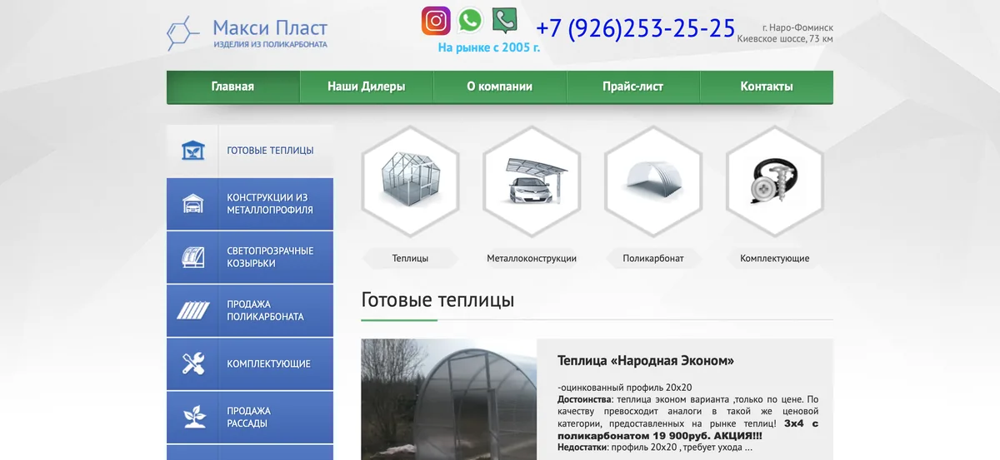
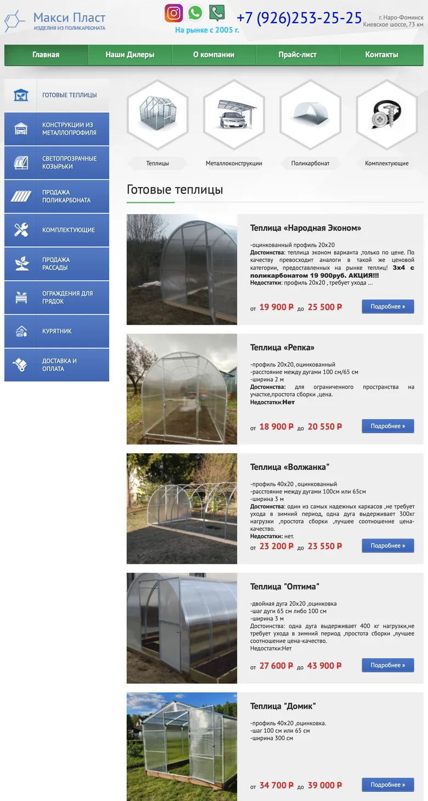
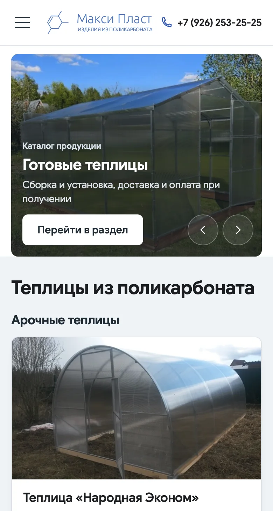
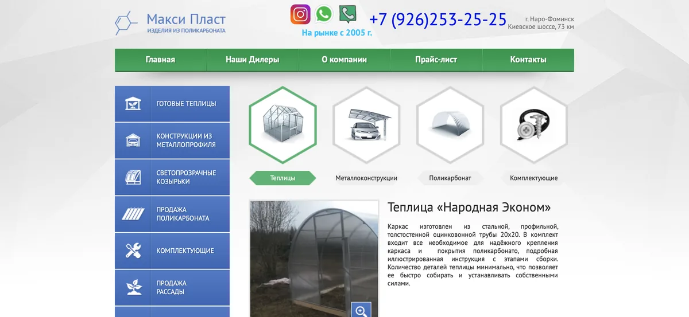
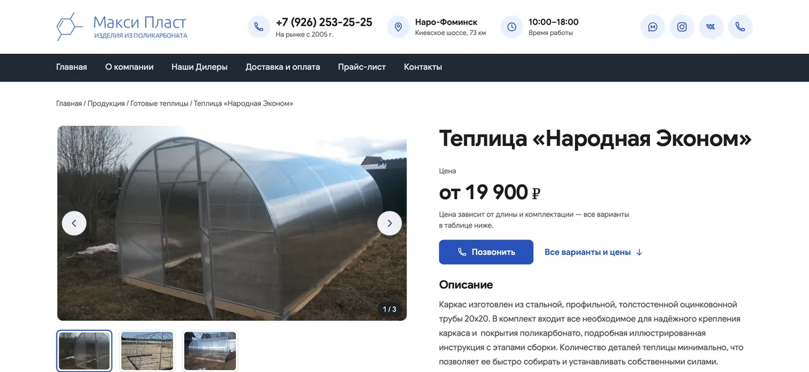
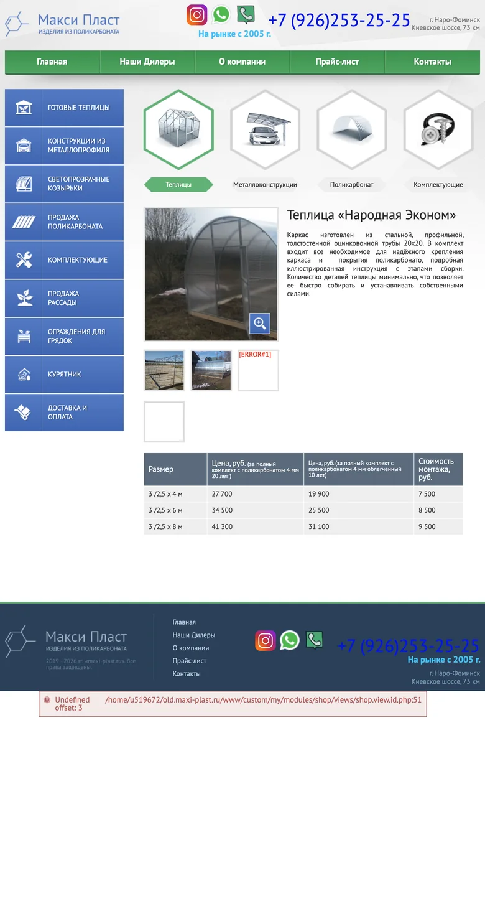
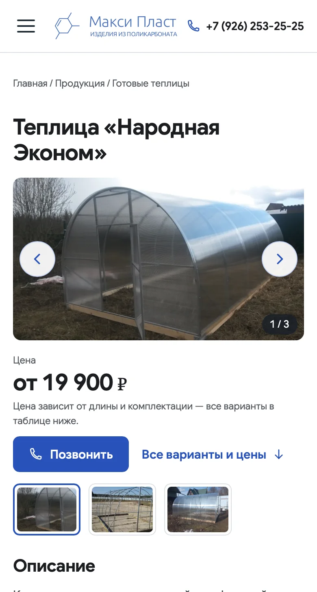
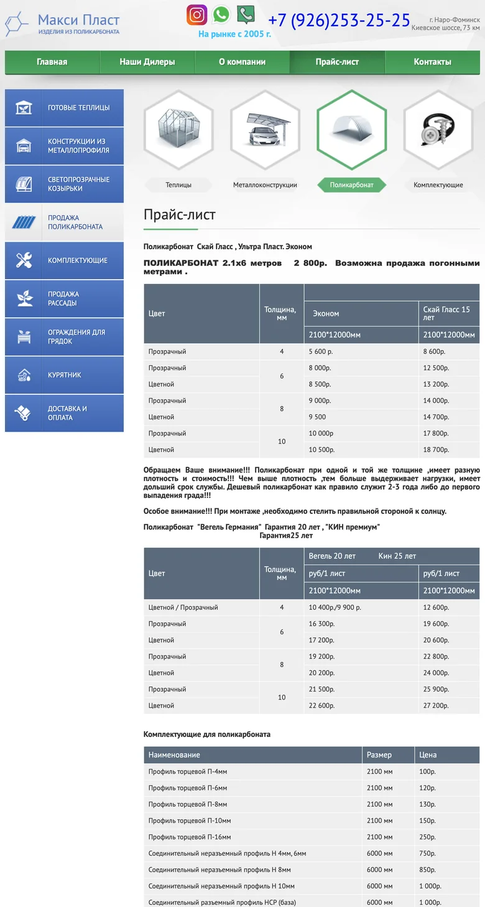
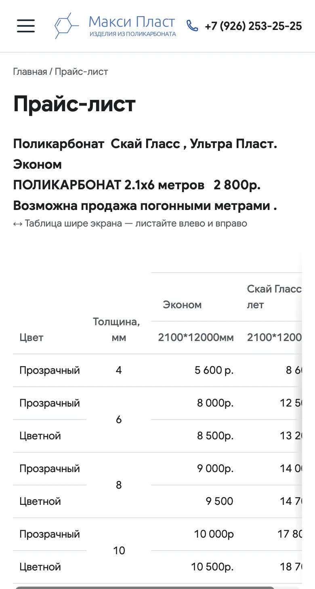

Maxi-Plast
Редизайн рабочего сайта без переезда с CMS
Обновил сайт производителя теплиц: адаптивная главная, каталог, карточки товаров и прайс. Новый дизайн встроен в действующую DIAFAN.CMS — без переезда на другую систему.
Открыть maxi-plast.ruЧто получил заказчик
- Сайт удобно читать на телефонеУ старого шаблона не было мобильной вёрстки — открывалась уменьшенная копия компьютерной версии.
- Цена и звонок — на первом экранеВ карточке товара на телефоне сразу видны цена «от» и кнопка «Позвонить».
- Работа в привычной админкеТексты и цены редактируются как раньше. Подборку на главной заказчик меняет сам — отметкой в карточке товара.
- Адреса и контент сохраненыСтраницы открываются по прежним ссылкам, title и description не изменились — кроме согласованного заголовка главной.
До и после
Нажмите на снимок, чтобы открыть его крупно
Главная на компьютере



Вместо одной ленты из 11 карточек — теплицы тремя группами по форме и навесы.
Главная на телефоне




На телефоне 7 теплиц и металлоконструкция, всё читается без увеличения.
Карточка товара на компьютере




Галерея со стрелками, счётчиком, свайпом и увеличением фото: заказчик собирается добавлять больше 10 фото на товар.
Карточка товара на телефоне




Подпись под ценой объясняет, от чего она зависит.
Прайс на телефоне




Данные прайса те же. Широкие таблицы больше не превращаются в мелкий текст.
Снимки 21.10.2026 в Safari, одинаковая ширина и первый экран. Телефон — эмуляция ширины 390 px.
Проверка перед запуском
Проверка на тестовой копии, резервная копия и возможность отката при переносе. Заказчик посмотрел тестовую версию, прислал правки и одобрил перенос.
- Тестовая копия
- Резервная копия
- Перенос с откатом
- 67
- страниц открываются по прежним адресам
- 659
- внутренних ссылок проверено после публикации
- 768
- изображений проверено после публикации
Опубликован 19.10.2026 · код в закрытом репозитории